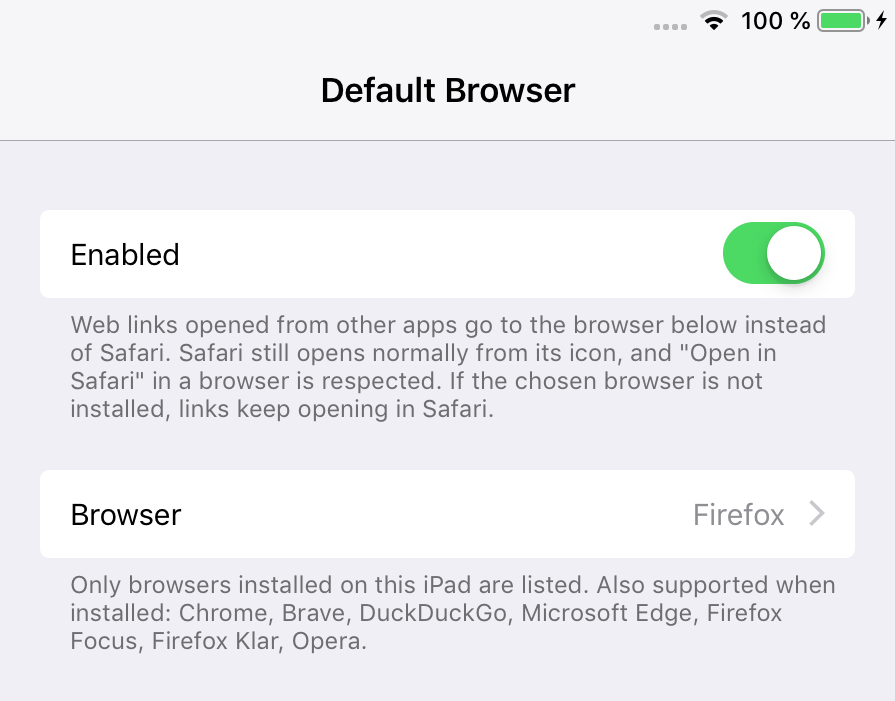

DefaultBrowser (iOS 12)
Open web links in the browser you choose instead of Safari.
On iOS 12 every web link opens in Safari. DefaultBrowser sends the http and https links that other apps open (Mail, Messages, Notes and so on) to the browser you pick instead.
Safari still opens normally from its own icon, and "Open in Safari" inside another browser still works. If the browser you picked is removed, links simply go back to Safari.
Screenshots

Features
- Supports Firefox, Chrome, Brave, DuckDuckGo, Firefox Focus, Firefox Klar, Microsoft Edge and Opera
- The picker only lists browsers that are installed
- Falls back to Safari when the chosen browser is missing
- Replaces the older FirefoxDefault tweak
Settings
Settings > Default Browser:
- Enabled: turns the tweak on or off. Applies right away.
- Browser: the browser that web links open in. Only installed browsers are listed; the note below the list names the other supported browsers.
Microsoft Edge and Opera use link formats that are not officially documented. They are offered only when the installed app supports them.
Compatibility
- Tested on iPad mini 2, iOS 12.5.8 (checkra1n + odysseyra1n / libhooker)
- Expected to work on iOS 12.x, on iPhone as well as iPad (tested on iPad)
Changelog
Version 2.0.1
- Renamed to include "(iOS 12)" in the name.
- Now installs only on iOS 12.x.
Version 2.0.0
- First public release.
- Choose between several browsers (successor of FirefoxDefault).
Information
| Version | 2.0.1 |
| Developer | itsAllexB |
| Size | 18 KB |
| License | GPL-3.0 |
| Source code | GitHub |
| Problems | Report an issue |
Unofficial. Not affiliated with or endorsed by Apple.